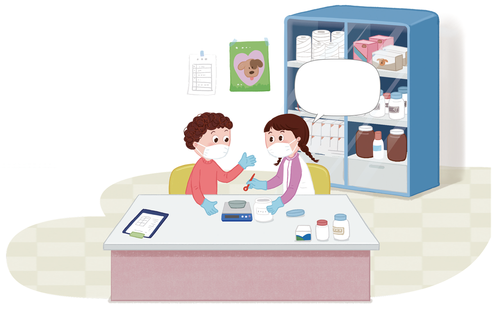

소윤이는 유기견들에게 영양제를 주기 위해 영양제
5
6
g 중에서
1
3
g을 덜어 냈습니다. 소윤이가 덜어 내고 남은 영양제는
몇 g인지 알아봅시다.
남은 영양제는
몇 g인지 어떻게
구할 수 있을까?

영상을 보고 남은 영양제의 양을 어떻게 구할 수 있을지 이야기해
보세요.
처음에 있던 영양제의 양에서 덜어 낸 양을 빼면 될 것 같습니다.
입력타입토글
리셋
확인